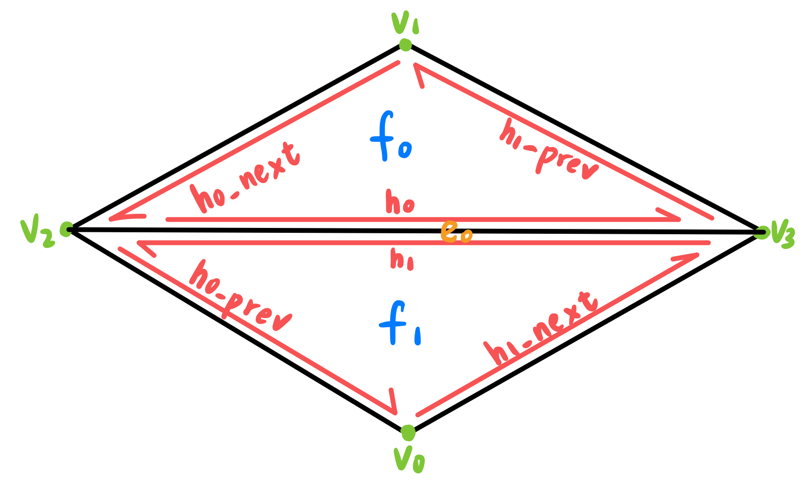
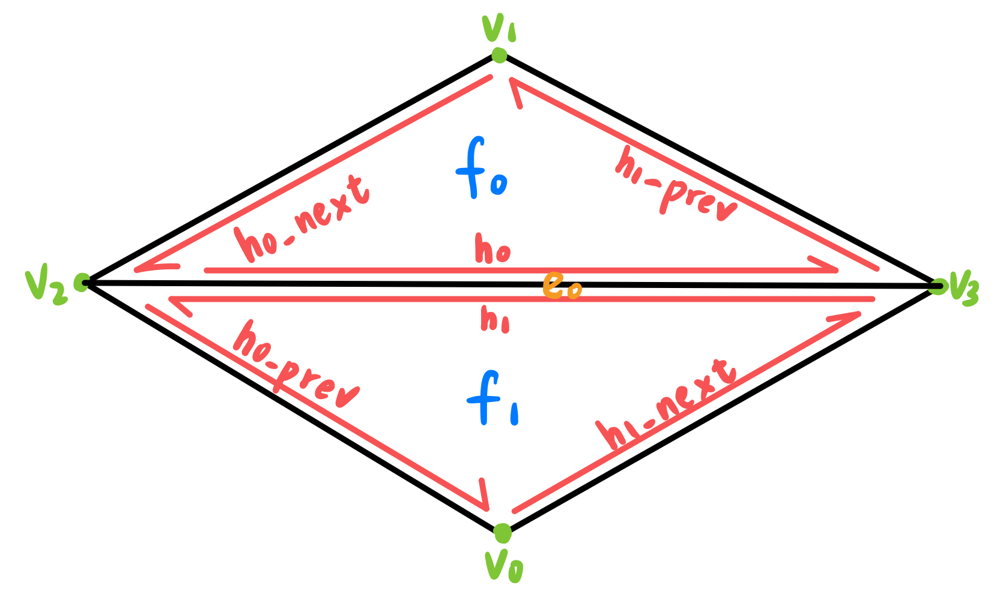
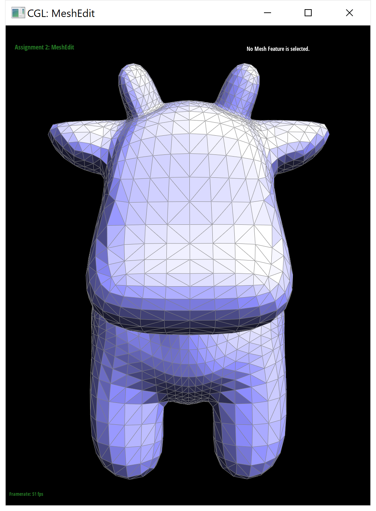
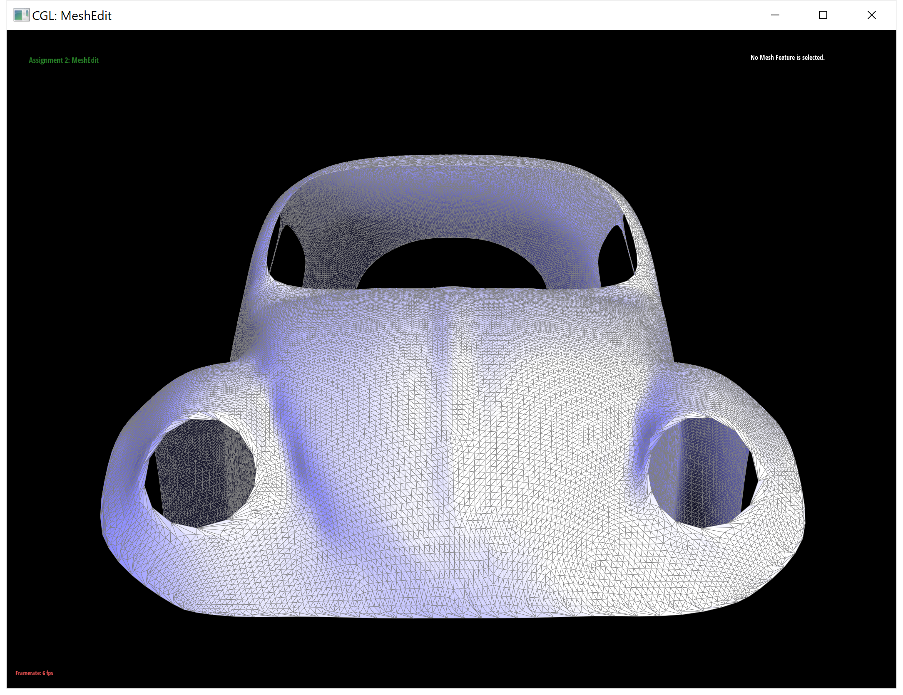
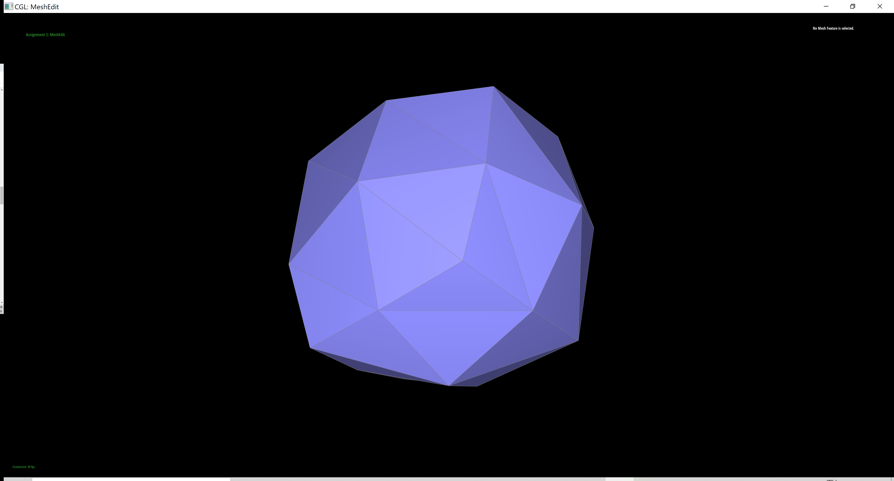

|
 |
CS 284: Foundations of Computer Graphics, Spring 2022
Project 2: Mesh Editor
Yi-Chen Chen, p2-meshedit-sp22-sushi
This site is published at: https://cal-cs184-student.github.io/sp22-project-webpages-ycchentp6/proj2/index.html.
Overview
The description of this project can be found here.
In this assignment, I build Bezier curves and Bezier surfaces using de Casteljau algorithm, manipulate triangle meshes represented by half-edge data structure, and implement loop subdivision.
Section I: Bezier Curves and Surfaces
Part 1: Bezier Curves with 1D de Casteljau Subdivision
De Casteljau's algorithm is a recursive method to evaluate Bézier curves. The algorithm consists of the following steps (reference1, reference2):
De Casteljau's algorithm.
I implement a helper function lerp to compute the linearly interpolated points. This lerp function is called recursively until we arrive at a final, single point. The final point lies on the Bezier curve at the given parameter t.
Recursively calling lerp function. (a, b, c, d are the 4 black controlling points)
Screenshots of a Bezier curve with 6 control points and each step/level of the evaluation from the original control points down to the final evaluated point.
A slightly different Bezier curve with different control points and parameter t.
Part2: Bezier Surfaces with Separable 1D de Casteljau
De Casteljau's algorithm can be extends to Bezier surfaces. Here is a slide that shows how it works.
My implementation:
Teapot evaluated by the De Casteljau's algorithm.
Section II: Triangle Meshes and Half-Edge Data Structure
Part 3: Area-Weighted Vertex Normals
My implementation to get area-weighted vertex normals:
* A (unit) normal is a vector that is perpendicular to a face/vertex.
Teapot shading with (right, Phong shading) and without (left, flat shading) vertex normals.
Part 4: Edge Flip
My implementation for the edge flip operation:
|
|
 |
Left: a simple mesh and all of its elements. Right: the mesh and all of its elements after the edge flip operation.
The teapot before (left) and after (right) some edge flips.
Part 5: Edge Split
My implementation for the edge split operation:
Left: a simple mesh and all of its elements. Right: the mesh and all of its elements after the edge split operation.
A mesh before (left) and after (middle, right) some edge splits.
|  |
A mesh before (left) and after (right) a combination of both edge flips and edge splits.
Extra Credit: Implement edge splits for boundary edges.
A mesh before (left) and after (right) some edge split operations on boundary edges.
Part 6: Loop Subdivision for Mesh Upsampling
My implementation for loop subdivision:
|  |
Results of my implementation of loop subdivision.
Since I did not implement the edge split operation for boundary edges, the boundary edges are not loop-subdivided here.
The cube becomes slightly asymmetric after repeated subdivisions.
We can pre-process the cube with edge splits so that the cube subdivides symmetrically. For each side of the cube, we split the diagonal edge once so that each side of the cube has 4 triangles.
Here are the results.
The reason causes the cube to become asymmetric after repeated subdivisions if we do not pre-process the cube with edge splits is that the sides of the cube become asymmetric as we perform loop subdivision. The images above are two sides of the cube after one subdivision – they look different!

|
|
|  |
And the images above are 4 corners of the cube after one subdivision – they also look different!
But if we pre-split the cube properly, you can see that all sides look the same and all corners look the same after repeated subdivisions.